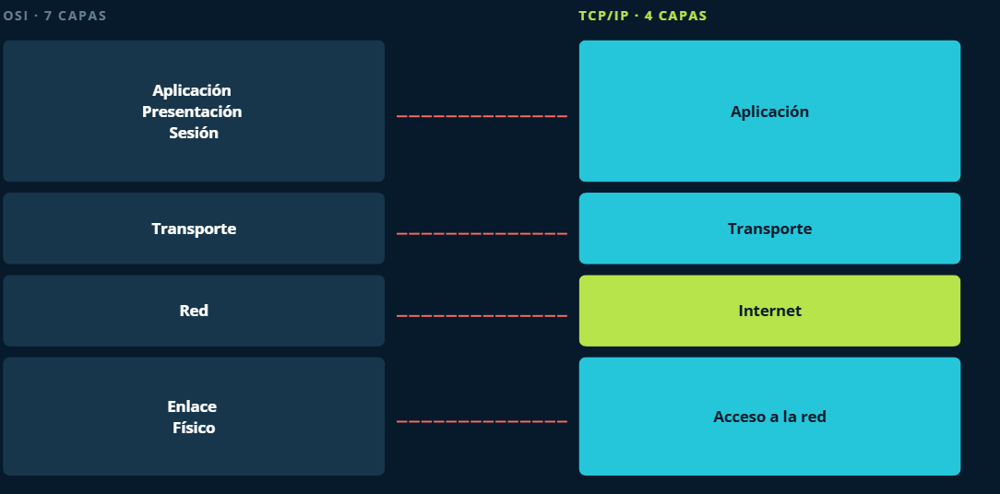

📚 Índice
1. Interconexión de redes
Internet es una red pública y global de ordenadores interconectados mediante el protocolo de Internet (Internet Protocol, IP) y que se comunican mediante la conmutación de paquetes.
Internet es la unión de millones de subredes domésticas, académicas, comerciales y gubernamentales. Por este motivo también se conoce como la red de redes.
A pesar de la diversidad de arquitecturas de red existentes, la familia de protocolos TCP/IP se utiliza en la mayoría de las redes que forman Internet.
💡 ¿Sabías que...?
TCP/IP también se utiliza en intranets de empresas, centros educativos, redes Wi-Fi, oficinas y hogares.
La denominación TCP/IP hace referencia a dos de sus protocolos más importantes:
- IP — Internet Protocol
- TCP — Transmission Control Protocol
1.1. Modelo de capas
El modelo TCP/IP organiza las funciones de comunicación de una red en diferentes capas.
🔵 Capa de aplicación
La capa de aplicación TCP/IP se corresponde con las capas de aplicación, presentación y sesión del modelo OSI.

Es la capa que utilizan los programas para comunicarse a través de la red con otros programas.
Ejemplos de protocolos
- HTTP — HyperText Transfer Protocol
- FTP — File Transfer Protocol
- SMTP — Simple Mail Transfer Protocol
- SSH — Secure Shell
🟢 Capa de transporte
La capa de transporte TCP/IP se corresponde con la capa de transporte del modelo OSI.
Sus protocolos solucionan problemas relacionados con la fiabilidad, el orden y el control de los datos que llegan al destino.
TCP
TCP — Transmission Control Protocol
Es un protocolo fiable y orientado a conexión. Permite que los datos enviados por una aplicación lleguen correctamente y en orden al destino.
TCP fragmenta el flujo de datos procedente de la aplicación en unidades más pequeñas y posteriormente las transmite hacia las capas inferiores.
UDP
UDP — User Datagram Protocol
Es un protocolo no orientado a conexión y no garantiza la entrega de los datos ni su orden.
Su principal ventaja es la rapidez, por lo que se utiliza en situaciones donde la velocidad es más importante que la exactitud de todos los datos.
Algunos ejemplos son las transmisiones de voz y vídeo.
🟠 Capa de red o interred
La capa de Internet del modelo TCP/IP es equivalente a la capa de red del modelo OSI.
Su misión fundamental es conseguir que los paquetes puedan viajar desde el origen hasta el destino atravesando diferentes redes.
Los paquetes pueden incluso seguir caminos diferentes y llegar al destino en un orden diferente al de salida.
Esta capa también proporciona mecanismos de direccionamiento.
🟣 Capa de acceso a la red
La capa de acceso a la red del modelo TCP/IP engloba las capas de enlace y física del modelo OSI.
Se encarga de utilizar los protocolos necesarios para conectarse a la red física y permitir el envío de paquetes IP.
Capa física
El objetivo de la capa física es transportar una corriente de bits desde una máquina hasta otra.
En esta capa se definen las señales y los medios utilizados para transmitirlas.
Los medios físicos pueden presentar diferentes características en cuanto a ancho de banda, retardo, coste, instalación y mantenimiento.
¿Qué es un protocolo?
Un protocolo es un conjunto de normas organizadas y acordadas entre los participantes de una comunicación.
Su misión es regular determinados aspectos de la comunicación.
1.2. ¿Qué es un servicio de capa?
En el modelo TCP/IP, los protocolos de las capas inferiores ofrecen un servicio a los protocolos de la capa inmediatamente superior mediante una interfaz que comunica ambas capas.
De esta manera, cada capa proporciona determinadas funcionalidades a las capas superiores y, finalmente, facilita a las aplicaciones el uso de Internet y otras redes.
Encapsulamiento
Para conseguir sus objetivos, cada protocolo añade información de control a la unidad de datos que recibe de la capa superior.
📦 Idea clave
Cuando los datos bajan por las diferentes capas, cada capa añade su propia información de control. Este proceso recibe el nombre de encapsulamiento.
Unidades de información
La unidad de información recibe un nombre diferente dependiendo de la capa en la que se encuentre.
| Capa | Unidad de información |
|---|---|
| Transporte | Segmento |
| Red | Paquete |
| Enlace | Trama |
| Física | Bit |
1.3. Estructura de red
Cuando un dispositivo necesita acceder a información que no está almacenada localmente, puede utilizar una red para acceder a ella de forma remota.
Existen principalmente dos modelos de organización:
- Cliente/servidor
- Redes de igual a igual (P2P)
Modelo cliente/servidor
Una red cliente-servidor es aquella en la que los clientes están conectados a uno o varios servidores que centralizan diferentes recursos y servicios.
👤 Cliente
Dispositivo o proceso que solicita información o un servicio.
🖥️ Servidor
Dispositivo o proceso que responde a las solicitudes realizadas por los clientes.
Ejemplo: servidor de correo
En un entorno corporativo, los empleados pueden utilizar un servidor de correo electrónico para enviar, recibir y almacenar mensajes.
El cliente de correo del ordenador realiza una solicitud al servidor y este responde enviando los datos solicitados.
Subida y bajada de datos
- Subida: transferencia de datos desde el cliente hacia el servidor.
- Bajada: transferencia de datos desde el servidor hacia el cliente.
Redes de igual a igual (P2P)
En una red entre iguales, dos o más ordenadores están conectados y pueden compartir recursos sin necesidad de disponer de un servidor dedicado.
Cada dispositivo puede actuar como cliente o servidor dependiendo de la operación que esté realizando.
🏠 Ejemplo
Una red doméstica formada por dos ordenadores que comparten una impresora y archivos puede funcionar mediante un modelo punto a punto.
Características de las redes P2P
- No necesitan un servidor dedicado.
- Los recursos están distribuidos entre los dispositivos.
- Cada dispositivo puede actuar como cliente y servidor.
- Son sencillas de implementar en redes pequeñas.
- La administración de la seguridad resulta más compleja cuando aumenta el número de dispositivos.
Cliente/servidor frente a P2P
| Característica | Cliente/Servidor | P2P |
|---|---|---|
| Servidor dedicado | Sí | No necesariamente |
| Recursos | Centralizados | Distribuidos |
| Administración | Centralizada | Descentralizada |
| Uso habitual | Empresas y organizaciones | Redes pequeñas y domésticas |
📝 Cuestionario
- ¿Cuáles son las capas que forman el modelo OSI? Realiza un gráfico indicando las capas OSI y su relación con las capas de la familia TCP/IP.
- Pon ejemplos de protocolos de cada capa.
- ¿Qué es el encapsulamiento?
- ¿Qué dos tipos de estructura de redes hay? Explica sus diferencias.
2. El protocolo IP
2.1. Interconexión de redes
La versión más utilizada actualmente del protocolo IP es IPv4, definida en el RFC 791 de 1981. Actualmente dispone de un sucesor, IPv6, cuyo uso se está extendiendo progresivamente.
Todas las versiones del protocolo IP permiten el envío de paquetes entre equipos sin establecer previamente una conexión. Esto significa que el equipo origen envía los datos al destinatario sin esperar una confirmación de que estos hayan sido recibidos correctamente.
📌 IP no garantiza la entrega
El protocolo IP proporciona un servicio no orientado a conexión y no fiable. No garantiza que los paquetes lleguen a su destino, que lleguen en el orden correcto o que no se pierdan.
Por este motivo, cuando una aplicación necesita una comunicación fiable se utiliza normalmente TCP en la capa de transporte.
2.2. Configuración de un nodo IP
Para que un equipo pueda comunicarse mediante TCP/IP es necesario configurar los protocolos de red del sistema operativo.
Como mínimo, el equipo deberá disponer de información relacionada con su direccionamiento IP.
Configuración básica
- Dirección IP: identifica la interfaz de red dentro de la red.
- Máscara de subred: permite determinar qué parte de la dirección corresponde a la red y qué parte corresponde al equipo.
Configuración adicional
Si el equipo necesita comunicarse con otras redes o acceder a Internet, será necesario configurar además:
- Puerta de enlace predeterminada: normalmente corresponde al router que permite enviar tráfico hacia otras redes.
-
Servidores DNS:
permiten traducir nombres de dominio, como
www.google.com, a direcciones IP.
💡 Parámetros principales
Un equipo conectado a una red TCP/IP suele necesitar, como mínimo:
- Dirección IP
- Máscara de subred
- Puerta de enlace
- Servidores DNS
2.3. Funciones del protocolo IP
El protocolo IP realiza principalmente las siguientes funciones:
- Elegir el camino adecuado para enviar los paquetes hacia su destino mediante el encaminamiento.
- Proporcionar un sistema de direccionamiento lógico mediante las direcciones IP.
- Permitir el envío de paquetes sin establecer previamente una conexión.
Características del servicio IP
- No orientado a conexión: no se establece una conexión antes de enviar los paquetes.
- No fiable: IP no garantiza que los paquetes lleguen a su destino.
- Sin garantía de orden: los paquetes pueden seguir diferentes caminos y llegar en un orden diferente al de envío.
2.4. Direccionamiento IP
En IPv4, una dirección IP tiene una longitud de 32 bits.
La dirección se divide en dos partes:
- Parte de red: identifica la red a la que pertenece el dispositivo.
- Parte de host: identifica el dispositivo dentro de esa red.
Para determinar qué bits corresponden a la red y cuáles corresponden al host se utiliza la máscara de subred.
🔎 Ejemplo
Para la dirección:
192.168.1.25
utilizando la máscara:
255.255.255.0
la dirección de red es:
192.168.1.0
2.5. Clases de dirección IPv4
Históricamente, las direcciones IPv4 se dividieron en diferentes clases. Las principales eran las clases A, B y C.
- Clase A: el primer octeto identifica la red.
- Clase B: los dos primeros octetos identifican la red.
- Clase C: los tres primeros octetos identifican la red.
- Clase D: utilizada para multidifusión (multicast).
- Clase E: rango reservado para usos especiales y experimentales.
| Clase | Rango | Máscara estándar | Uso |
|---|---|---|---|
| A | 1.0.0.0 – 126.255.255.255 | 255.0.0.0 | Redes de gran tamaño |
| B | 128.0.0.0 – 191.255.255.255 | 255.255.0.0 | Redes de tamaño medio |
| C | 192.0.0.0 – 223.255.255.255 | 255.255.255.0 | Redes pequeñas |
| D | 224.0.0.0 – 239.255.255.255 | — | Multicast |
| E | 240.0.0.0 – 255.255.255.255 | — | Reservada |
⚠️ Importante
El direccionamiento basado en clases es un sistema histórico. Actualmente se utiliza principalmente CIDR, que permite utilizar prefijos de red de longitud variable.
2.6. Direccionamiento sin clase (CIDR)
Con el crecimiento de Internet quedó patente que el direccionamiento basado en clases no aprovechaba eficientemente el espacio de direcciones IPv4.
En 1993 se introdujo CIDR (Classless Inter-Domain Routing), o encaminamiento entre dominios sin clases.
CIDR permite indicar el número de bits utilizados para identificar la red mediante una barra seguida del número de bits.
📐 Ejemplo de CIDR
La red:
192.168.0.0/16
indica que los primeros 16 bits corresponden a la parte de red.
La máscara equivalente es:
255.255.0.0
| Notación CIDR | Máscara | Bits de red |
|---|---|---|
/8 |
255.0.0.0 | 8 |
/16 |
255.255.0.0 | 16 |
/24 |
255.255.255.0 | 24 |
2.7. Direcciones reservadas y especiales
Existen determinados rangos de direcciones IPv4 que tienen funciones especiales.
| Rango | Nombre | Función |
|---|---|---|
0.0.0.0/0 |
Ruta por defecto / todas las direcciones | Representa cualquier destino IPv4 en determinados contextos de configuración. |
127.0.0.0/8 |
Loopback | Comunicación interna con el propio equipo. |
169.254.0.0/16 |
Link-local | Direcciones asignadas automáticamente cuando no se obtiene una configuración DHCP válida. |
10.0.0.0/8 |
Privada | Utilizada en redes privadas. |
172.16.0.0/12 |
Privada | Utilizada en redes privadas. |
192.168.0.0/16 |
Privada | Muy utilizada en redes domésticas y pequeñas redes locales. |
2.8. Métodos de transmisión
Dependiendo del número de destinatarios, podemos distinguir tres métodos principales de transmisión.
📡 Unidifusión — Unicast
La comunicación se establece entre un emisor y un único destinatario.
1 → 1
📡 Multidifusión — Multicast
El emisor envía información a un grupo determinado de dispositivos.
1 → grupo
📡 Difusión — Broadcast
El mensaje se envía a todos los dispositivos de una determinada red IPv4.
1 → todos
Configurar una tarjeta de red usando el terminal
En sistemas Linux podemos utilizar diferentes herramientas para consultar y configurar las interfaces de red.
Identificar la interfaz de red
Los sistemas Linux actuales utilizan normalmente nombres
predecibles para las interfaces de red, como
enp2s0 o wlp3s0.
Para mostrar las interfaces disponibles podemos utilizar:
ifconfig -a
En sistemas Linux modernos también es habitual utilizar
el comando ip, por ejemplo:
ip addrConfigurar una interfaz mediante DHCP
En sistemas que utilizan el archivo tradicional
/etc/network/interfaces, una configuración
DHCP puede ser similar a la siguiente:
auto enp2s0
iface enp2s0 inet dhcpActivar la interfaz
Una vez configurada, la interfaz puede activarse mediante:
sudo ifup enp2s0Desactivar la interfaz
Para desactivar la interfaz:
sudo ifdown enp2s0⚠️ Sistemas Linux actuales
La configuración mediante
/etc/network/interfaces y
ifup/ifdown depende de la distribución
y de cómo esté configurada la gestión de red.
En muchas distribuciones actuales se utilizan
herramientas como NetworkManager o systemd-networkd.
📝 Cuestionario
- ¿Cuáles son los parámetros mínimos que se deben configurar en un nodo para que pueda conectarse a una red basada en TCP/IP?
- ¿Cuáles son las principales funciones del protocolo IP?
- ¿Por qué se implementó el direccionamiento sin clases (CIDR)? Razona la respuesta.
- Explica qué son las direcciones de loopback y link-local.
- ¿Qué diferencia existe entre Unicast, Multicast y Broadcast?
- ¿Qué información proporciona una máscara de subred?
- ¿Qué significa la notación 192.168.1.0/24?
3. El protocolo TCP
3.1. Interconexión de redes
El protocolo TCP (Transmission Control Protocol o protocolo de control de transmisión) fue diseñado para funcionar en redes poco fiables.
Es un protocolo de la capa de transporte (nivel 4) y su objetivo principal es aportar fiabilidad a las transmisiones basadas en TCP/IP.
🔐 ¿Qué aporta TCP?
TCP permite establecer una comunicación fiable entre dos aplicaciones, controlando que los datos enviados lleguen correctamente y en el orden adecuado.
- Control de errores.
- Detección de pérdidas.
- Retransmisión de datos.
- Entrega ordenada de los datos.
- Control de flujo.
La fiabilidad que proporciona TCP resulta especialmente útil en comunicaciones en las que necesitamos asegurar que los datos llegan correctamente, sin pérdidas ni errores.
Como contrapartida, los mecanismos de control que utiliza TCP generan una carga adicional de tráfico y procesamiento respecto a protocolos como UDP.
3.2. TCP y UDP
TCP y UDP son protocolos de la capa de transporte, pero proporcionan servicios diferentes.
| Característica | TCP | UDP |
|---|---|---|
| Orientado a conexión | ✔ Sí | ✘ No |
| Fiabilidad | ✔ Sí | ✘ No |
| Entrega ordenada | ✔ Sí | ✘ No garantizada |
| Retransmisión | ✔ Sí | ✘ No |
| Control de flujo | ✔ Sí | ✘ No |
| Cabecera | Mayor | Menor |
💡 Recuerda
TCP prioriza la fiabilidad, mientras que UDP tiene una menor sobrecarga y no proporciona las mismas garantías de entrega.
3.3. Puertos TCP
El protocolo TCP proporciona un punto de acceso a las aplicaciones mediante los puertos.
Un puerto es un número entero que permite identificar el servicio o aplicación que utiliza una comunicación TCP dentro de un equipo.
🔌 Ejemplo
Un servidor puede tener una dirección IP:
192.168.1.10
y ofrecer un servicio web mediante:
TCP puerto 80
De esta forma, la dirección IP identifica el equipo y el puerto permite identificar el servicio dentro de ese equipo.
Tipos de puertos
| Tipo | Rango | Descripción |
|---|---|---|
| Bien conocidos | 0 – 1023 | Puertos asociados tradicionalmente a servicios y protocolos conocidos. |
| Registrados | 1024 – 49151 | Pueden ser registrados para aplicaciones y servicios específicos. |
| Dinámicos o efímeros | 49152 – 65535 | Normalmente se asignan dinámicamente a las aplicaciones cliente. |
🌐 Algunos puertos conocidos
| Puerto | Protocolo / servicio |
|---|---|
20/21 |
FTP |
22 |
SSH |
23 |
Telnet |
25 |
SMTP |
53 |
DNS |
80 |
HTTP |
110 |
POP3 |
143 |
IMAP |
443 |
HTTPS |
Para saber más
3.4. Socket de Internet
Un socket es un concepto abstracto que permite que dos programas puedan intercambiar datos, normalmente mediante un protocolo de transporte.
Una comunicación TCP puede identificarse mediante una combinación de elementos que incluye las direcciones IP y los puertos de origen y destino.
🔌 Ejemplo de socket
Podemos representar un extremo de una comunicación TCP mediante:
84.88.125.15 : TCP : 2300
Donde:
- 84.88.125.15 → dirección IP.
- TCP → protocolo de transporte.
- 2300 → número de puerto.
3.5. Ejemplo de conexiones TCP
Un servidor puede tener un puerto escuchando conexiones y mantener simultáneamente varias conexiones TCP.
Esto es posible porque una conexión TCP se identifica mediante los extremos de la comunicación.
🖥️ Servidor Telnet
IP: 10.0.1.25
Puerto: 23
Socket:
10.0.1.25:23
💻 Clientes
IP:
10.0.1.50
Puerto:
1038
Socket:
10.0.1.50:1038
IP:
10.0.2.47
Puerto:
1038
Socket:
10.0.2.47:1038
🔎 ¿Por qué pueden utilizar el mismo puerto?
Dos clientes pueden utilizar el mismo puerto local, por ejemplo el 1038, porque sus direcciones IP son diferentes.
Una conexión TCP se distingue por la combinación de los extremos de la comunicación, no únicamente por el número de puerto.
3.6. Resumen
| Concepto | Idea principal |
|---|---|
| TCP | Protocolo de transporte orientado a conexión y fiable. |
| Puerto | Permite identificar una aplicación o servicio dentro de un equipo. |
| Socket | Representa un extremo de una comunicación mediante IP, protocolo y puerto. |
| Conexión TCP | Relaciona los extremos origen y destino de la comunicación. |
Cuestionario
- ¿Cuál es la función principal del protocolo TCP?
- ¿En qué se diferencia TCP de UDP?
- ¿Qué mecanismos utiliza TCP para proporcionar fiabilidad?
- ¿Qué es un puerto y qué función desempeña?
- ¿Qué diferencia existe entre los puertos bien conocidos, registrados y dinámicos?
- ¿Qué es un socket?
- ¿Por qué dos equipos diferentes pueden utilizar simultáneamente el mismo número de puerto?
Bibliografía
https://corriol.github.io/sxe/UD01/index.html
Servicios en Red. Editorial Síntesis